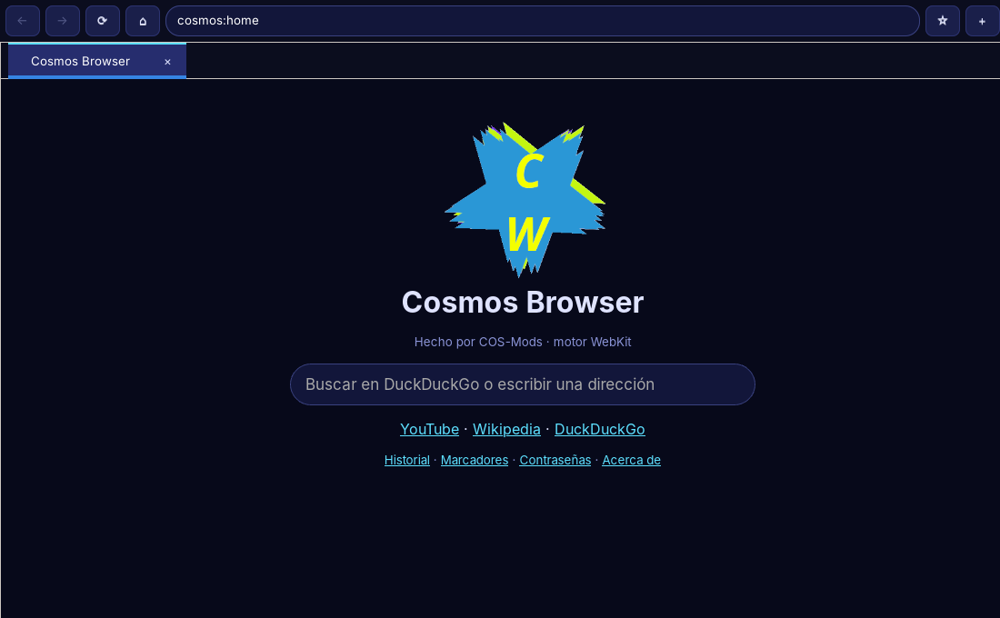

Un navegador ligero para Linux, hecho por COS-Mods. Funciona incluso en una Vaio con Turion II sin SSE4.

Versión 0.8. Dos motores en uno: usa WebKit y, si el sistema no lo tiene, cae a un motor propio escrito en C.
Usa el WebKitGTK del sistema: Wikipedia, Google, YouTube con video. Ligero incluso frente a Firefox.
HTML, CSS, JavaScript (QuickJS) y red hechos a mano, para cuando no hay WebKit.
Dibuja con la tarjeta gráfica. COSMOS_SOFTWARE=1 fuerza el modo por software.
Páginas internas cosmos://history y cosmos://bookmarks, estrella para marcar y autocompletado en la barra.
Pestañas efímeras: sin historial, sin cookies en disco y sin guardar contraseñas.
Bóveda cifrada (AES-256-GCM) con contraseña maestra. Guarda y rellena solas.
Trae contraseñas desde un CSV de Chrome, Edge, Brave, Firefox o Bitwarden, y cookies desde cookies.txt o el cookies.sqlite de Firefox.
Se guardan en ~/Download. Un círculo en la barra se rellena de azul mientras baja y al pulsarlo ves el historial de descargas.
Inglés por defecto; también español, 日本語, 中文, 한국어, العربية, Русский y Українська, cambiables desde el menú.
Pensado y probado en una Sony Vaio de 2011 con Arch Linux.
En Arch Linux. Necesita compilarse; tarda poco.
sudo pacman -S --needed base-devel git sdl2 curl gtk3 webkit2gtk-4.1 \
gst-plugins-good gst-plugins-bad gst-libav libgcrypt sqlite \
noto-fonts noto-fonts-cjk
git clone https://github.com/CarlOS-Creator109/cosmos-browser
cd cosmos-browser
make
./cosmos-browserEl lanzador ./cosmos-browser usa WebKit si está compilado y, si no, el motor propio. Fuerza uno con COSMOS_ENGINE=own o COSMOS_ENGINE=webkit.
Para YouTube en el motor propio: sudo pacman -S yt-dlp ffmpeg. En Debian, Ubuntu o Void los paquetes tienen otros nombres, pero son los mismos.
WebKitGTK no soporta WebExtensions, así que no son compatibles. Lo más cercano que viene en camino son userscripts y un bloqueador de anuncios.
Está cifrado, pero no ha sido auditado. La contraseña maestra no se puede recuperar. No guardes cuentas importantes ahí todavía.
Van cifradas con el llavero del sistema. Exporta un cookies.txt con una extensión y impórtalo.